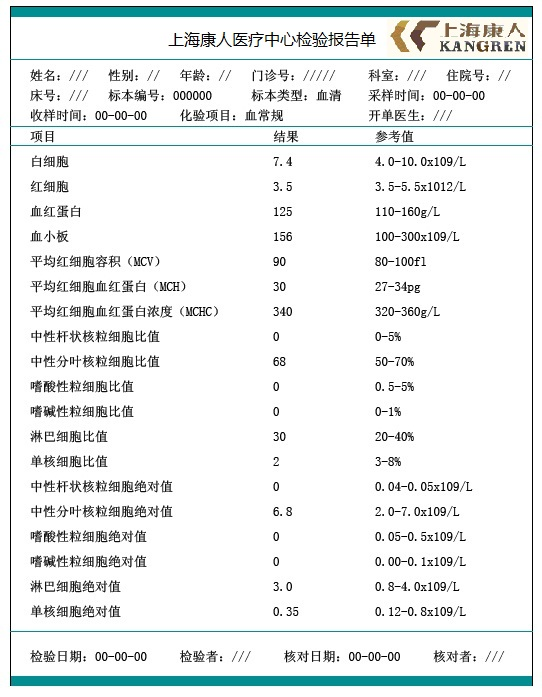
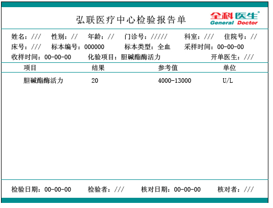
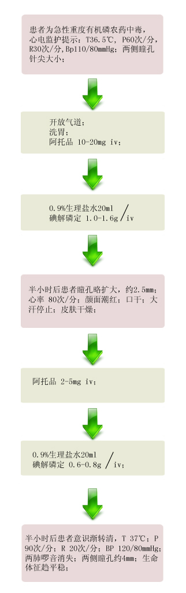

【病例摘要】
- 现病史：女性，35岁，昏迷1小时。患者1个小时前因与家人不和，自服药水1小瓶，把药瓶打碎扔掉，家人发现后5分钟病人腹痛、恶心，并呕吐一次，吐出物有大蒜味，逐渐神志不清，急送来诊，病后大小便失禁，出汗多。
- 既往史：既往体健，无肝、肾、糖尿病史，无药物过敏史，月经史、个人史及家族史无特殊。
- 查体：T36.5℃, P60次/分，R30次/分,Bp110/80mmHg，平卧位，神志不清，呼之不应，压眶有反应，皮肤湿冷，肌肉颤动，巩膜不黄，双侧瞳孔针尖样，对光反射弱，口角流涎，肺部叩诊呈清音，两肺可及大量哮鸣音和散在湿罗音，心界不大，心率60次/分，律齐，无杂音，腹平软，肝脾未触及，下肢不肿。

【辅助检查】
- 血常规:
 - 全血胆碱酯酶活力测定:

【诊断】
- 急性有机磷农药中毒
【事件】

【洗胃术操作要点】